출처: https://gall.dcinside.com/mgallery/board/view/?id=mounjaro&no=214067
이 글은 현재 이루어지고있는 식약처, 관세청의 마운자로 통관 차단에 대한 문제점임.
글 내용 읽다보면 마운자로 뿐만이 아니라 너네가 먹고있는 약들도 해당이 될 수 있으니까 마운자로 안쓴다고 강건너 불구경 하듯이 쳐다보다가는 너네들도 식약처와 관세청한테 한대 쳐맞을수가있음.
마운자로에 대해 관심을 가진다면 우리나라의 마운자로 가격이 일본, 중국, 인도에 비해 많이 비싼 편을 알 수 있음.
그래서 가까운 일본, 중국 등을 여행 가면 마운자로를 사와서 쓰고 싶은 사람들도 많을것임.
그런데 실제로 사오려고 하면 세관 통관 단계에서 막히고 해당 물품의 통관이 보류가 되어 사실상 반입 금지가 된다는 사실은 알고있을것임.
우선 마갤 밖 여론인 전문의약품을 왜 직구하냐 미친새끼들 아니냐 그러는데
법적으로 따지면 개인이 전문의약품을 수입해오는 행위가 금지가 되지는 않았음, 약사법 조항을 다 뒤져봐도 전혀 없을꺼임.
개인이 허락 받지 않고 의약품을 수입하는게 금지가 된 품목들은
1) CITES 협약에 의한 의약품 (약사법 제43조)
2) 마약류 (마약류관리법 제3조, 관세법 제234조의2)
3) 스테로이드 주사제, 에페드린 주사제 (약사법 제47조의4)
위 3가지가 전부이며
도리어 의료기기야말로 정말로 직구가 금지가 되어있음.
의료기기법
제26조(일반행위의 금지) ① 누구든지 제6조제2항 또는 제15조제2항에 따라 허가 또는 인증을 받지 아니하거나 신고를 하지 아니한 의료기기를 수리ㆍ판매ㆍ임대ㆍ수여 또는 사용하여서는 아니 되며, 판매ㆍ임대ㆍ수여 또는 사용할 목적으로 제조ㆍ수입ㆍ수리ㆍ저장 또는 진열하여서는 아니 된다.
다만 법적으로 금지가 된 것은 아니지만 의약품은 원칙상 관세법 제226조 1항, 동법 제2항 및 관세법시행령 제233조에 따라 세관장의 확인이 필요한 물품 및 확인 방법에 관한 사항은 관세법 제226조에 따른 세관장 확인물품 및 확인방법 지정고시에 나와있고, 지정고시를 보면 개인의 경우에는 수입요건확인 면제 추천서를 구비하도록 되어있음.
관세법
제226조(허가ㆍ승인 등의 증명 및 확인) ① 수출입을 할 때 법령에서 정하는 바에 따라 허가ㆍ승인ㆍ표시 또는 그 밖의 조건을 갖출 필요가 있는 물품은 세관장에게 그 허가ㆍ승인ㆍ표시 또는 그 밖의 조건을 갖춘 것임을 증명하여야 한다.
② 통관을 할 때 제1항의 구비조건에 대한 세관장의 확인이 필요한 수출입물품에 대하여는 다른 법령에도 불구하고 그 물품과 확인방법, 확인절차, 그 밖에 필요한 사항을 대통령령으로 정하는 바에 따라 미리 공고하여야 한다.
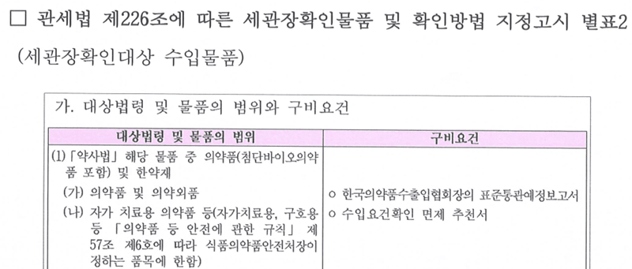
다만 현실적으로 약사법에 정의 된 (전세계 모든) 의약품에 대해 수입요건확인 면제 추천서를 받을 경우에는 당연히 세관은 그야말로 전세계 여행객들이 온갖 항의를 하고, 그러다 상비약 조차 유치당해 약 없이 우리나라 돌아다니다 쓰러져서 죽기라도 해서 외교적 문제로 번지는 등 100% 헬게이트가 될 것이기때문에
수입통관 사무처리에 관한 고시에 자가사용목적에 한해 의약품의 경우에는 6박스 혹은 3개월치 분량, 오남용우려의약품의 경우에는 국내 의사에 처방전에 기재된 수량까지는 요건확인을 면제해주는 제도를 운영하고있음.
또한 수입통관 사무처리에 관한 고시는 유형을 가리지 않음 (국제우편이던 인편이던 둘 다 동일한 규정이 적용됨)
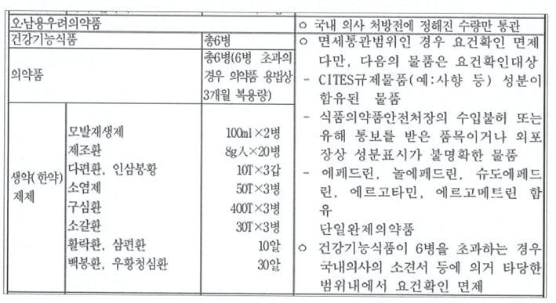
그런데 해당 표를 잘 보면 분류가 "의약품"이라고 되어있지 "일반 의약품"이라고는 말을 하지 않았기때문에 자가사용목적의 전문의약품도 3개월치까지는 그동안 통관을 시켜주었던것이고. 해당 규정상으로는 별도의 처방전을 내는 규정은 없지만 자가사용목적이라는것을 입증하기위해 관행적으로 처방전 혹은 의사의 소견서, 진단서 등을 요구를 해왔던거임.
오남용우려의약품은 규정에따라 짤없이 국내 처방전만 인정이고.
이마저도 국제 우편 등에 대해서만 처방전을 요구하였고, 인편의 경우에는 수천개의 비아그라와 같이 통상적으로 보았을때 개인이 사용하기에는 절대로 불가능한 양의 비아그라를 갖고온다거나 고의적으로 어디에 은닉하여 밀수를 하는게 아닌 이상 그냥 누가 봐도 여행중에 쓸 정도의 의약품 등은 별도의 서류를 요구를 하고 있지는 않는걸로 알고있음.
물론 비아그라같은건 요구하고있고.
그런데 해당 표를 잘 보면 식품의약품안전처장의 수입불허 또는 유해 통보를 받은 품목은 요건확인을 면제 해주지 않고 요건확인 대상이라고 명시가 되어있고.
이 글을 읽는 대부분이 알고있듯 위고비, 마운자로는 식약처가 유해 통보를 한 품목이기에 수입요건 확인추천면제서 제출을 하여야 통관이 가능한 품목으로 되어버렸음.
그럼 이제 여기에서 문제가 발생이 되는데 너네들이 궁금할만한 대표적인걸 몇개 말해줄게.
1) 일본의사나 한국의사 처방전 받아서 내면 되는거 아니에요?
-> 안됨, 처방전은 구비요건에 들어가있지 않아서 내도 통관 안시켜줌
2) 그러면 수입요건 확인추천면제서를 받아서 세관에 내서 들여오면 되는거 아니에요?
-> 해당 서류는 한국희귀필수의약품센터 혹은 각 시도지사가 발급을 해주는 서류인데
해당 추천서를 써주는 대상의 지침은 아래와 같음.
서울시
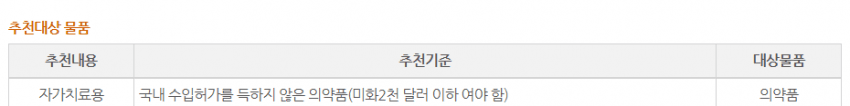
한국희귀필수의약품센터
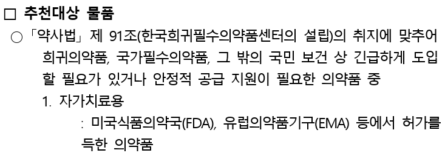
이외 다른 시, 도는 생략함 근데 다 조건 비슷비슷함. 국내에 허가된거는 일단 대상 아님.
추천대상 물품이 정해져있고
추천대상 물품이 아닐 경우에는 추천서를 써주지 않고 거절함.
왜냐하면 조건이 달성되면 당연히 해줘야하는 기속행위가 아닌 추천이니까.
내가 알기로는 실제로 마운자로, 위고비를 수입추천을 신청 해본 사람은 아무도 없지만, 유선상으로 문의를 하였을때 신청이 들어 올 경우 신청이 들어왔으니 검토는 하겠지만 추천 대상이 아닐경우에는 발급을 거부한다고 답변이 왔음.
* 이렇게만 들으면 저 제도가 유명무실한 제도같지만 실제로 1주일에 평균 5건 내외의 추천서를 써준다고 하였으며 추천 대상들은 실제로 국내에 아예 유통되지 않는 희귀병에 대한 의약품들이라고 했음.
3) 그럼 진짜 수입요건 확인추천면제서 말고는 대체할수있는게 없어요?
-> ㅇㅇ
4) 근데 표를 잘 보니까 오남용우려의약품에는 유해통보와 같은 말이 일절 없네요? 유해통보를 해도 국내의사 처방전만 내면 되는거 맞나요?
-> ㅇㅇ, 실제로 비아그라 역시 유해통보 품목이지만 처방전만 내면 통관시켜주고있는 이상한 상황이 벌어지고있음.
그래서 마갤러들이 오남용 언제되냐고 종종 글 올라오는것도 이러한 이유때문임.
식약처 답변
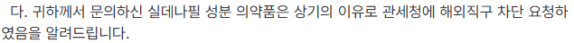
관세청 답변
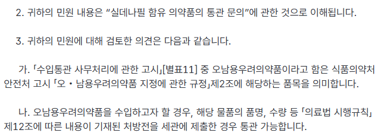
5) 식품안전나라 가보니까 해외직구식품 국내 반입차단 원료ㆍ성분에 마운자로(터제파타이드), 위고비(세마글루티드) 없는데요?
-> 당연하지 걔는 수입식품법 제25조의 3에 근거하여 운영하는거고 의약품은 수입식품법 대상이 아니니까, 나중에 터제파타이드랑 세마글루티드 특허 풀려서 건강기능식품에 세마글루티드 성분이 들어간 다이어트 건기식 같은걸 내놓는다면 그때는 추가될수는있겠다.
6) 타이레놀(아세트아미노펜), 멜라토닌도 직구 막은거 유해통보인지 뭐시기로 막은건가요?
-> ㅇㅇ
7) 마운자로를 유해통보해서 수입을 막고있다는 정보는 어디서 찾아요?
-> 못찾을꺼임, 왜냐면 비공개니까. (언론보도자료, 문자로 뿌리는거 제외하고, 정부 사이트에서 오피셜로 확인 할 수 있는 곳을 말하는거임)
8) 이거 허용해주면 아무튼 정체불명 의약품 돌아다녀서 절대 안됨
-> 그럼 유통하는 그 새끼를 족치세요.... 당근에 일본 마운자로 뿐만이 아니라 의약품 자체를 판다고 올리면 바로 삭제되고 계정 정지당해요..
그리고 이제 식약처가 관세청에게 마운자로 통관 금지를 요청(유해통보)하는 법적 근거는 아래와 같음
약사법 제61조의2(의약품 불법판매 및 알선ㆍ광고 금지 등)
① 누구든지 제44조, 제50조제1항ㆍ제2항에 위반되는 의약품의 판매를 알선하거나 광고해서는 아니 되고, 제61조제1항 각 호에 해당하는 것 또는 같은 조 제2항에 따른 의약품과 유사하게 표시되거나 광고된 것의 판매를 알선하거나 광고해서는 아니 된다.
② 식품의약품안전처장은 「정보통신망 이용촉진 및 정보보호 등에 관한 법률」 제2조제1항제1호에 따른 정보통신망(이하 “정보통신망”이라 한다)을 이용하여 하는 행위가 다음 각 호의 어느 하나의 행위에 해당되는지 여부를 모니터링할 수 있다. <신설 2023. 4. 18.>
1. 제44조, 제50조제1항ㆍ제2항을 위반하여 의약품을 판매하는 행위
2. 제61조제1항 각 호의 어느 하나에 해당하는 의약품 또는 같은 조 제2항에 따른 의약품과 유사하게 표시되거나 광고된 것을 판매하는 행위
3. 제1항을 위반하는 행위
4. 그 밖에 제1호부터 제3호까지에 준하는 행위로서 총리령으로 정하는 행위
⑥ 식품의약품안전처장은 제2항에 따른 모니터링 결과 또는 제4항에 따라 받은 통보 결과가 제2항 각 호의 어느 하나에 해당하는 경우 그 내용 및 제5항에 따른 정보통신서비스 제공자등의 조치 결과를 관계 중앙행정기관의 장에게 알릴 수 있다.
국내에서 약사법을 위반하여 판매하고 있는 의약품 모니터링에 관한 결과를 관세청장에게 알림 = 관세청에서는 유해통보로 인지 = 반입차단
이것이 실무적으로 식약처가 유해통보를 했다는 정체인것임.
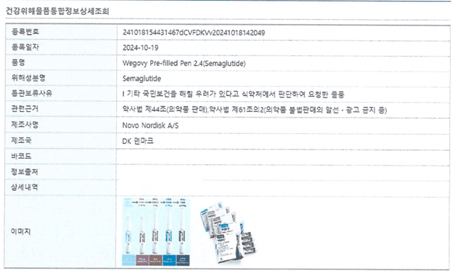
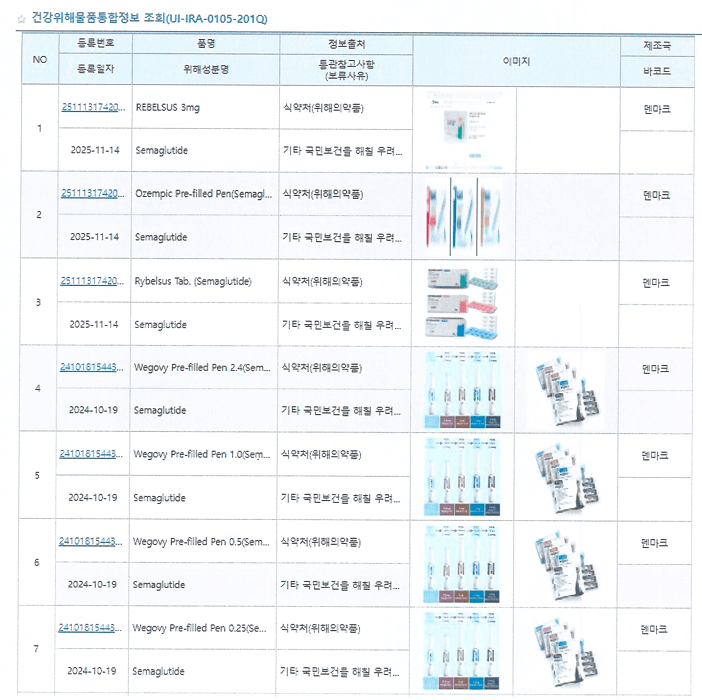
그리고 그 모니터링에 관한 결과는 관세청 - 식약처간 내부전자업무시스템으로 공유가 되고 대외적으로 공개가 되지 않기때문에
유해통보를 한 의약품이 무엇인지조차 국민들은 전혀 모르는 상태임. (저 위에 2개의 사진은 내무업무시스템을 통해 공유된 위고비(세마글루티드) 유해통보 사진임)
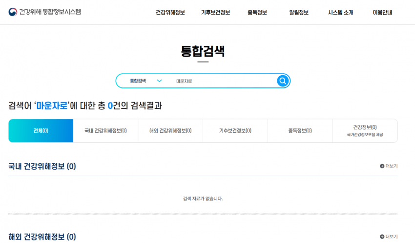
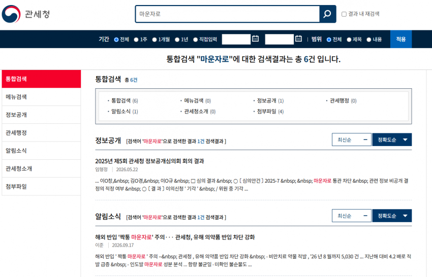
대국민 사이트 등에 가서 아무리 마운자로, 위고비 백날 검색해봐야 통관을 차단한다는 안내, 고시 등등 국민이 인지 하고 알 수 있는 사이트 등은 한건도 안나올꺼임.
당연하겠지만 본인들이 생각해도 명확한 법적근거 없이 쳐 막고있으니
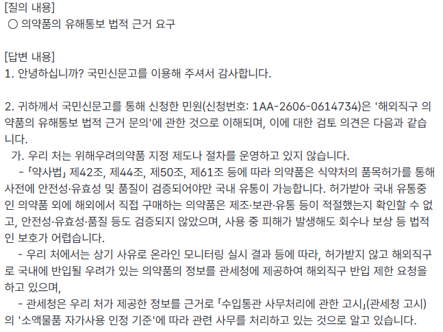
유해통보에 대한 법적 근거를 요구해도
위해우려의약품 지정 제도나 절차를 운영하고 있지 않는다고 답변이 오고있고.
https://gall.dcinside.com/mounjaro/209669
이 글에서도
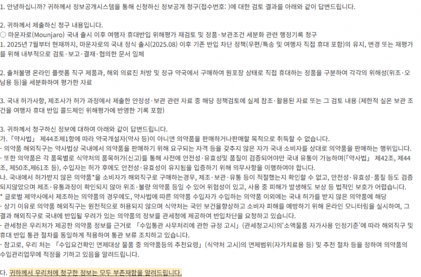
이딴 ㅄ같은 답변만 돌아오고있는것임.
그렇게 현행법으로는 도저히 개인 직구를 차단 할 수 없으니까 법 개정을 통해 이러한 법을 만들려고도 시도하고있고.
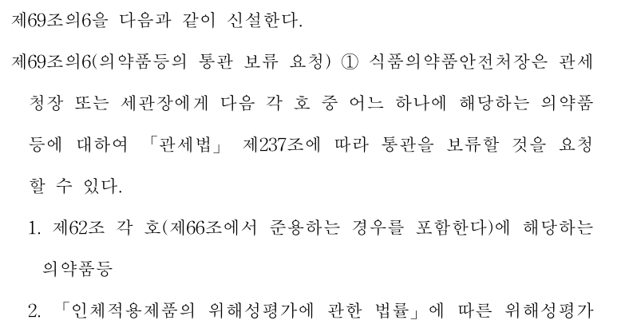
근데 아직 법 통과가 안됐으면 법률 유보원칙에 의해 통관 보류를 요청하는 행위를 하면 안되는건데 법이 없어도 그냥 어떻게든 억지로 해석해서 돌아가고있는것이 현실임.
이러한 무리한 법 집행은 대한민국헌법 제37조를 정면으로 위배를 한다고 나는 생각을 하고 있음.
대한민국 헌법 제37조
①국민의 자유와 권리는 헌법에 열거되지 아니한 이유로 경시되지 아니한다.
②국민의 모든 자유와 권리는 국가안전보장ㆍ질서유지 또는 공공복리를 위하여 필요한 경우에 한하여 법률로써 제한할 수 있으며, 제한하는 경우에도 자유와 권리의 본질적인 내용을 침해할 수 없다.
가) 의약품은 기본적으로 수입요건이 필요하다고 하여 의약품의 직구를 할 권리를 법률로써 제한하였음 (여기까지는 OK)
나) 이를 수입통관 사무고시에 의해 자가사용목적에 부합하면 수입요건 확인을 생략 해줌 (법률에 근거하지 않아도됨.)
다) 유해통보라는 제도를 통해 수입요건 확인을 생략해주는걸 다시 또 유해통보라는 제도로 제한하였음 << 여기에서 국민의 자유와 권리가 제한되었기때문에 저 유해통보라는 제도 역시 법률로써 제한하여야하지만 현재는 이러한 제도를 운영 할 수있는 법률은 없는 상황임
여기서 관세청이 요건확인을 면제해주는 자가사용제도 자체를 폐지하면 할 말은 없어지는데
그럴리는 없을거라 생각함. 이걸 없애버리는 순간 자가사용목적의 의약품의 통관은 사실상 불가능해지는거고 전세계에서 항의가 들어올게 뻔하니까.
그럼 식약처의 유해통보로 인한 지금 개 병신같은 상황을 알아보자면
1) 유해통보의 범위는 정말 말도 안되게 넓음
https://news.nate.com/view/20260609n02561
해당 뉴스 기사를 잘 살펴보면
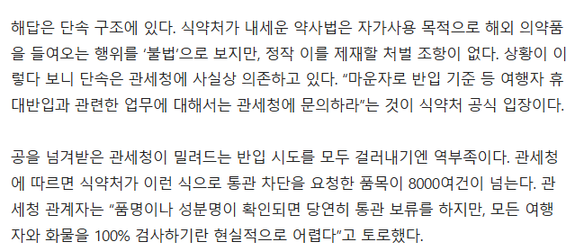
요청한 품목이 8천여건이 넘는다고 되어있고, 이 중에서 확실하게 알려진것은
위고비(세마글루티드), 마운자로 (터제파타이드), 타이레놀(아세트아미노펜)
(얘내들은 너무 유명해서 관련 자료 올리는건 패스함)
메트포르민 (전세계에서 1차적으로 쓰는 나온지 100년된 당뇨약)
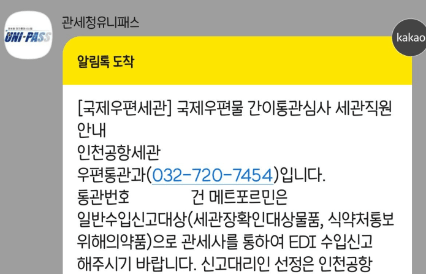
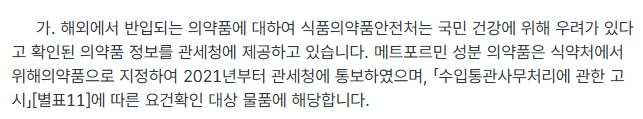
실데나필 (비아그라)
히알루론산 (안약, 너네들이 안과에서 처방받고 돈키에서 300엔주고 사오는 그 안약 맞음)
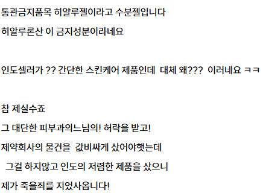
듣기만 한것들은 탈모약 (미녹시딜, 피나스테리드, 두타스테리드), 멜라토닌 정도가 있고
이외 수천가지의 품목, 성분 등이 있는걸 보아 너네들이 일상적으로 먹는 약은 아마 유해통보가 싹 다 되었다고 생각된다.
왜 생각이냐라고 말하냐면 식약처가 관세청한테 통관을 막아달라고 한 요청 목록은 현재로써는 비공개 사항이거든.
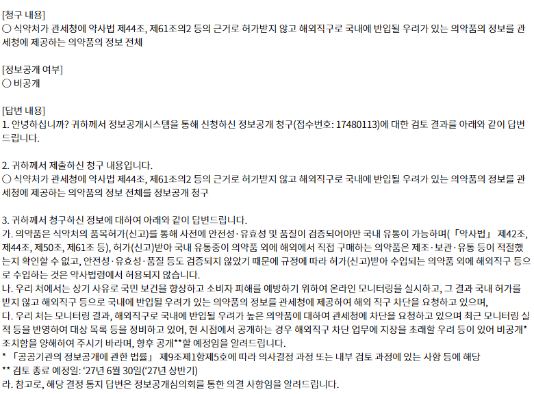
작년에 마갤 직구사태 일어났을때는 해당 목록은 절대 공개 못한다고 완강히 거부하면서 뻐팅기다가, 본인들도 무지성으로 통보한게 아차싶었는지 대상 목록을 정비하고 추후 공개 예정이라고 한거는 그나마 사람다운 행동이라고는 생각하네. 물론 언제 공개할지는 말 안했음 ㅋ
2) 유해통보는 외국인한테도 적용이됨
유해통보를 하여 수입시 요건확인이 필요가 된 항목은 국적, 반입 경로 (인편, 국제우편, 화물특송)을 가리지 않아, 여행온 우리나라 관광객도 마운자로가 실제로 압수되고있음.
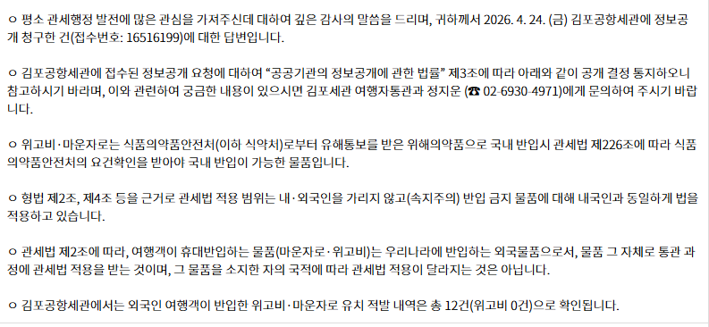
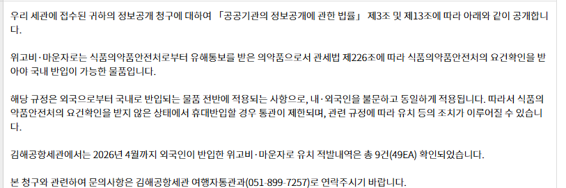
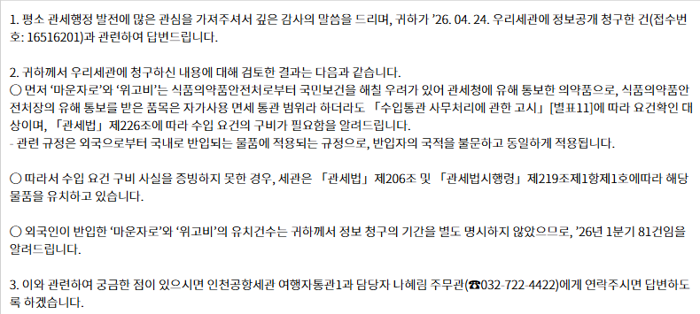
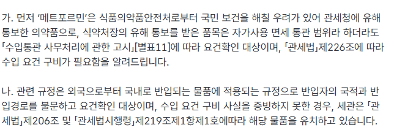
3) 국내 처방을 받은 의약품도 유해통보 대상이면 다시 갖고 들어올때 수입요건확인 면제 추천서를 내야함
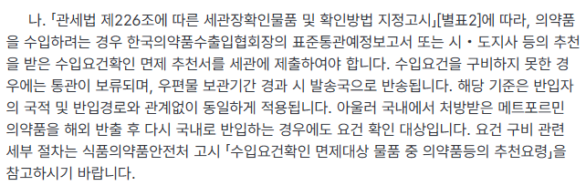
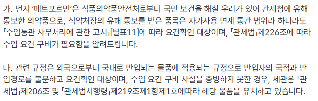
참고로 해당 문제에 대해서 식약처 의약품관리과에 유선으로 물어봤을땐 그거는 우리가 의도한게 아닌데.. 하면서 아몰랑 시전하고 그냥 끝냈음.
예전에 규제신문고에 민원을 넣었을때도 관세청 담당자한테 전화로 지금 유해통보 제도가 백번 양보해서 합당하다고 치더라도 우리나라 마운자로 압수해가는거는 도저히 이해가 안간다 우리나라 마운자로는 포장으로 구분이 가능하지 않냐고 물어봤을때도 그게 단순히 포장만으로 결정되는 사항이아니다.. 식약처가 관세청한테 그냥 단순히 "마운자로"면 통관 보류하라고 요청이 왔기에 우리는 그렇게 하고있는거다 라는 취지의 내용을 들었었음.
4) 무슨 약을 통관 보류 당할지 모름
1)에서 말한 목록 비공개 조항때문에 자가 사용목적으로 들여온 소량의 약 중 어떤약이 압수대상인지 조차 알 지 못할뿐더러
3)의 조합때문에 국내에서 처방받은 약 조차 다시 가져오면 통관 보류대상임
아니 그래서 진짜 뺏어가요? 라고 물어본다면
마운자로, 위고비, 파브론, 이브퀵 같은거 제외하면 실무적으로는 뺏어갔다고는 들어보지는 못했지만.
이론상 이게 가능하다고 관세청 답변이 온게 문제라니까?
나중에 개 ㅄ같은 세관 공무원 만나서 니가 우리나라에서 처방받은 약을 보고도 국내 반입 금지약입니다 하면서 남은 약 다 뺏어가도 너는 그 공무원을 상대로 민원을 넣더라도 뭐 어떻게 할 수 있는게 없어 왜냐면 그 공무원은 규정대로 정당한 행정 집행을 한거니까 넌 그냥 다시 한국 병원가서 약 처방 받는거 말고는 방법이 없어 물론 그 약이 비싼약이라고? 그건 니 사정이고요 ㅋㅋ 다음에 남은 약 뺏기기 싫으면 해외 나갈때는 예정된 일정에 맞는 약만 챙겨가서 우리나라 올때 맞춰서 딱 다 써야함 물론 그러다가 해외 체류 일정이 길어져서 약 부족하면 어떻게하냐고? 그건 니 알아서하는거고.
5) 절차상으로만 보면 유해통보된 의약품보다 치료용 마약류가 반입하기 더 쉬움
유해통보가 된 품목은 수입요건확인 면제 추천서 이외에는 전부 인정이 되지 않으며 마약류의 경우에는 식약처장의 수입승인서가 있으면 직접 들고 가져오는게 가능함 (국제우편은 안됨)
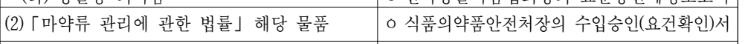
실제로도 좀 물어보는게 많아 조금 귀찮긴 한데 의사의 진단서, 전자 항공권, 여행일자 등 민원 양식에 맞춰서 입력하면 식약처에서 승인을 내줌
온라인으로도 신청이 가능해서 외국인들 접근성도 좋은편이고, 근데 수입요건확인 면제 추천서는 온라인 신청도 없고 실무적으로 우리나라에 유통되지 않는 의약품이 아니라면 거절을 하고있음.
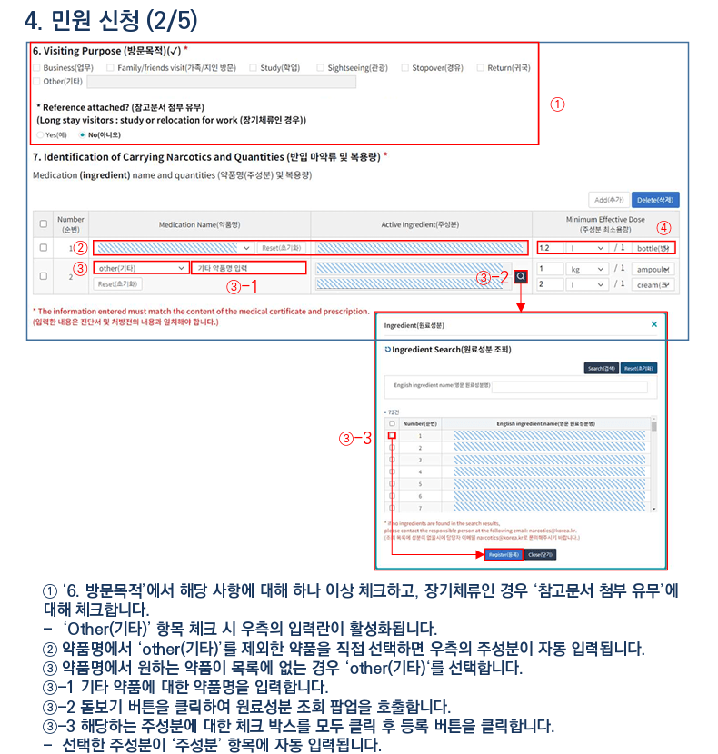
그래서 정말로 그럴리는 없겠지만
이론상으로는 뇌전증 + 당뇨환자가 CBD 대마 오일을 자가 치료목적으로 자가치료용 마약류 휴대 반입 민원 신청를 통해 마약류 취급을 승인받아 수입승인서를 챙기고 마운자로, 메트포르민도 자국 의사의 처방전을 챙겨
우리나라에 왔는데 세관에서 노란 자물쇠 걸려서 까봤더니 거기에서 CBD 대마 오일이랑 메트포르민, 마운자로가 나왔다면
CBD 대마 오일은 마약류 휴대 반입 민원 신청를 통해 마약류 취급을 승인받았으니 통과가 됐지만 메트포르민, 마운자로는 유해통보 품목이기때문에 자국 의사의 처방전은 인정되지 않고 수입요건확인 면제 추천서를 내지 못한 외국인은 그대로 당뇨 약은 유치당해서 출국할때 찾아가는 개 븅신같은 일도 일어날수가 있음.
이게 지금 우리나라의 의약품 반입과 관련해서 주먹구구식으로 굴러가는 븅딱같은 운영이라고 볼 수 있음.
지금의 규정은 서로가 발목을 잡는 형태임
마지막으로 식약처, 관세청 등이 마운자로 같은 비만치료제 직구 위험하다 아무리 경고해도 그거 솔직히 말해서 진심으로 듣는사람 사람 아무도 없고 귓등으로만 들을꺼임
비만치료제 자체가 사회적 관심도가 매우 높은 약이라서 수요는 엄청나게 많은데
한-중-일 가격차를 보면 옆나라 해외 직구에 관심 안가지는게 이상한거임. 월 4~5만원 차이면 모르겠는데 한달에 몇십만원 차이가 나니까.
아무리 규제기관에서
어떤 부작용이 일어날지 모른다라고 경고해봐야 그건 국내에서 사도 써도 어떤 부작용이 일어날지 모르는거고, 만약 부작용 일어나면 그냥 의사한테 가서 진료 받으면 그만이고.
안전하지 않다고 호소해도 실제로 해외 마운자로 맞은것 때문에 여럿 죽었다는 직접적인 뉴스가 나오지 않는 이상은 전혀 설득력이 없을꺼고
인도발 마운자로는 짝퉁이라고 언론보도 뿌려도 그에 따른 근거는 밝히지도 않고, 정보공개청구해도 불법의약품 운운하면서 아무것도 말 해주지 않고.
(쓰읍 그냥 그렇다면 그런줄알아야지 왜 자꾸 어디서 말대답이야? 하는 느낌임)
콜드체인 운운하는건 원칙적으로는 8도 이하에서 보관해야하는게 맞지만 부득이하게 상온에서 보관 21일까지 가능하다는건 말 안하고있을뿐더러 우리나라에서 사서 상온으로 몇시간 보관해서 콜드체인 깨지는건 괜찮고?
의약품 사용 중 피해 발생시 피해구제가 불가능하다고 하는데, 그럼 국내에서 맞다 부작용 생기면 그럼 아무것도 묻지도 따지지도않고 치료비랑 보상은 해주기는함? 어떻게든 사용자 과실 잡아서 보상 안해주려고 하는데?
솔직히 아무리 직구 위험하다고 주장해봐야 설득력이 높지도 않음.
한국, 일본의 마운자로 가격차이는 어마무시하게 나고있어서 일본에서 사오는 사람이 얼마나 많은지 알 수 없는게 현실이고
그렇다고 법적으로 처벌을 할 수 있는 근거는 없어서 처벌은 못하고, 그냥 가져오는 행위 자체를 밀수입 미수범으로 간주하자니 그러면 세관 특사경 죽어나갈꺼고 세관 특사경 갈아서 기소청에 자료 넘겨봐야 기소청에서 내용 보고 불기소 처분할수도있고, 기소하더라도 법원이 무죄를 내릴 가능성이 매우 높음.
하다못해 지금의 현실을 인정해서 여행자 휴대품에 한해 세관에 정식 신고하면 1회당 3개월치까지, 그러나 단기간에 3개월치씩 계속 가져오는 사람들 쳐내는 방식으로 제한적으로 반입을 허용해준다와 같은 타협안 조차 내놓지 않고 그냥 무식하게 틀어막기만하니까
사람들은 안사오는게 아니라 전수조사 안걸리길 기도하면서 반입하고있고. 설령 걸리더라도 30일내로 다시 출국할때 다시 받아갔다 그대로 다시 입국하면서 몰래 쓰고있으니 오히려 국내에 얼마나 스시자로를 쓰고있는지조차 파악조차 못하고있음.
차라리 어느정도 조건부로 양성화 시켜주면 최소한 식약처나 보건복지부에서도 사람들이 스시자로를 어느정도 쓰는구나 라는 실태라도 파악 할꺼고 그게 오히려 가격을 내려야만 하는 이유가 될 수도 있는건데 얘내들은 그런 현실을 인정하지 않고 그냥 틀어막기만 하니 사람들은 점점 음지로 숨어들어가고 오히려 그렇게 밀수꾼이 되는거임.
그리고 식약처도 그냥 해외직구라고 약사법 운운하면서 죄다 동일하게 위험하다고 하지 말고
자체적으로 위험도를 구분하고 그에 따른 규제를 했으면 좋겠음 예컨데 인도에서 직구를 해도 마운자로를 샀냐, 위고비 복제약을 샀냐랑 일본에서 마운자로 처방받아서 직접 갖고오는거랑 셋이 전부 동등한 위험도라고 볼 수 있겠냐는거임.
그렇다고 보건복지부나 건강보험이 마운자로 가격 인하에 적극적인것도 아니고, 그냥 비급여 의약품이니 어쩔수없다라는 식으로만 사실상 방관하고있고.
위고비, 마운자로 급여협상한다는데 솔직히 기대는 별로 안하고있음.
정 막고 싶으면 법과 규정을 제대로 만들어서 의료기기 직구처럼 아예 찍소리도 못할 법적 근거를 만들던지
할 말은 많은데 그냥 여기까지 쓸란다
국내꺼 멜라토닌 아님 ‘식물성’멜라토닌이라 포장했지만 ㅇㅇ추출물에 멜라토닌이 얼마 함유된거임